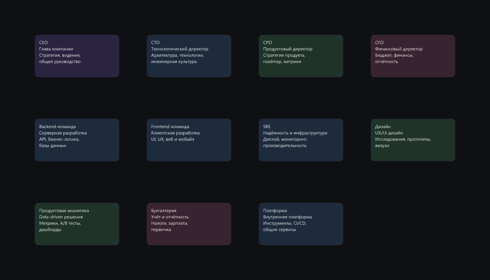
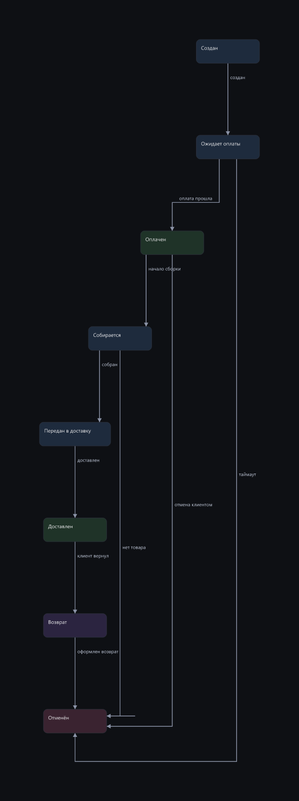
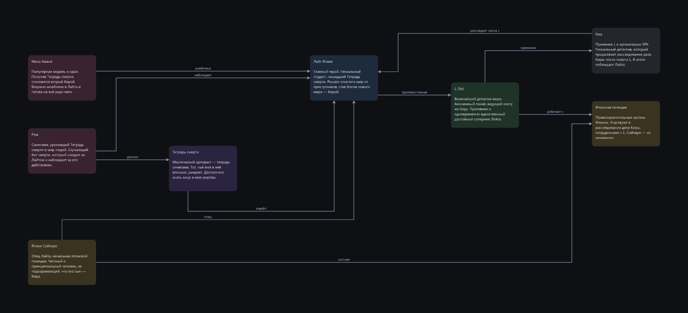
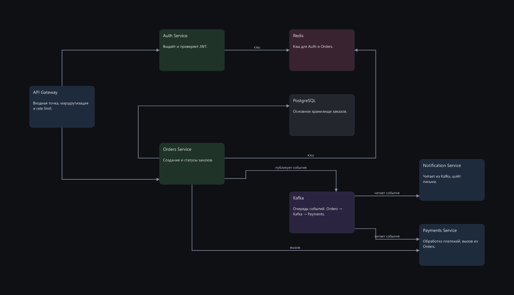
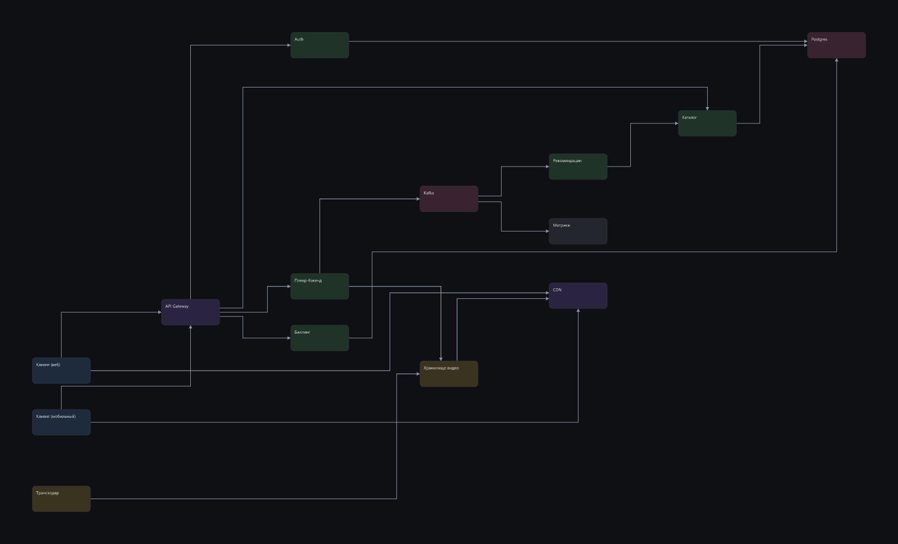
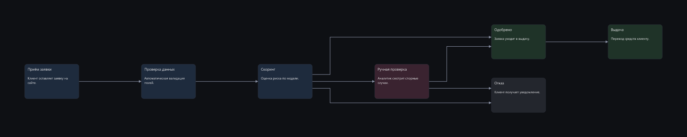
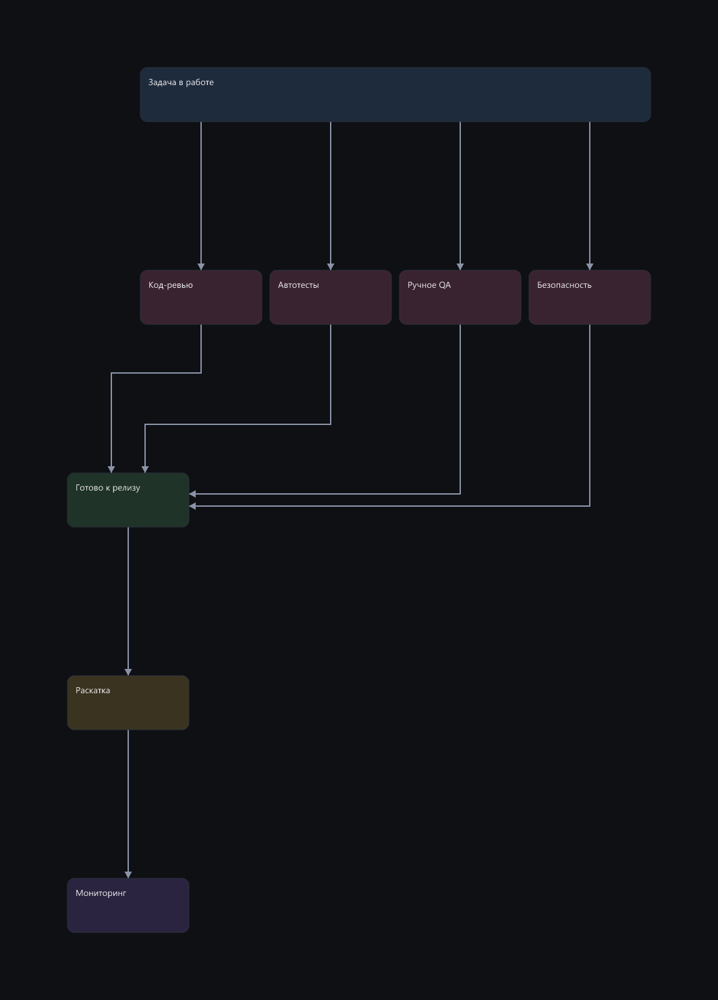
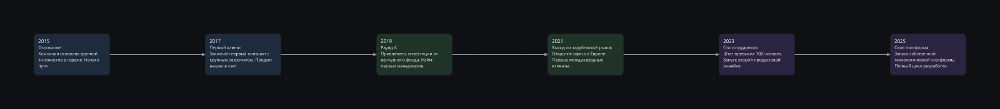

Сравнение прогонов E09 → E03
Модель deepseek-v4-flash, пул из 11 задач. Клик по картинке — открыть в полном размере.
88 → 61средний score
8/8 → 5/8без жёстких конфликтов
4 → 21пересечений стрелок
cards-set
не граф: набор карточек, сетка и воздух
E03 100/100
медиана
8 итераций · 0 пересечений · отказов 0 · без конфликтов 100%

tree-org -23
иерархия, ветви должны держаться у своих корней
E09 100/100
медиана
13 итераций · 0 пересечений · отказов 0 · без конфликтов 100%

E03 77/100
медиана
40 итераций · 1 пересечений · отказов 0 · без конфликтов 0%

next-to-occupied
новая композиция рядом с занятой зоной, без наложений
E03 76/100
медиана
8 итераций · 0 пересечений · отказов 0 · без конфликтов 100%

states-order -23
граф с циклами и обратными связями
E09 91/100
медиана
7 итераций · 0 пересечений · отказов 0 · без конфликтов 100%

E03 68/100
медиана
10 итераций · 2 пересечений · отказов 0 · без конфликтов 100%

pipeline-cicd
линейный конвейер с ветвлением, направление слева направо
E03 60/100
медиана
9 итераций · 1 пересечений · отказов 0 · без конфликтов 100%

wiki-anime -42
вики по документу, чистый лист, 8-10 узлов, дерево связей
E09 94/100
медиана
8 итераций · 0 пересечений · отказов 0 · без конфликтов 100%

E03 52/100
медиана
13 итераций · 1 пересечений · отказов 0 · без конфликтов 100%

extend-existing -53
дополнение готового графа новыми узлами без ломки старого
E09 83/100
медиана
8 итераций · 0 пересечений · отказов 0 · без конфликтов 100%

E03 30/100
медиана
50 итераций · 5 пересечений · отказов 3 · без конфликтов 0%

dense-arch -25
стресс: 14 узлов, плотный граф, несколько подсистем
E09 53/100
медиана
9 итераций · 4 пересечений · отказов 0 · без конфликтов 100%

E03 28/100
медиана
11 итераций · 11 пересечений · отказов 0 · без конфликтов 0%

fix-broken
починка готовой плохой схемы, а не постройка с нуля
E09 96/100
медиана
7 итераций · 0 пересечений · отказов 0 · без конфликтов 100%

tight-row
особое требование внутри настоящей схемы: часть узлов плотным рядом
E09 85/100
медиана
19 итераций · 0 пересечений · отказов 6 · без конфликтов 100%

wide-timeline
композиция, которой идейно положено быть широкой и низкой
E09 100/100
медиана
8 итераций · 0 пересечений · отказов 0 · без конфликтов 100%
